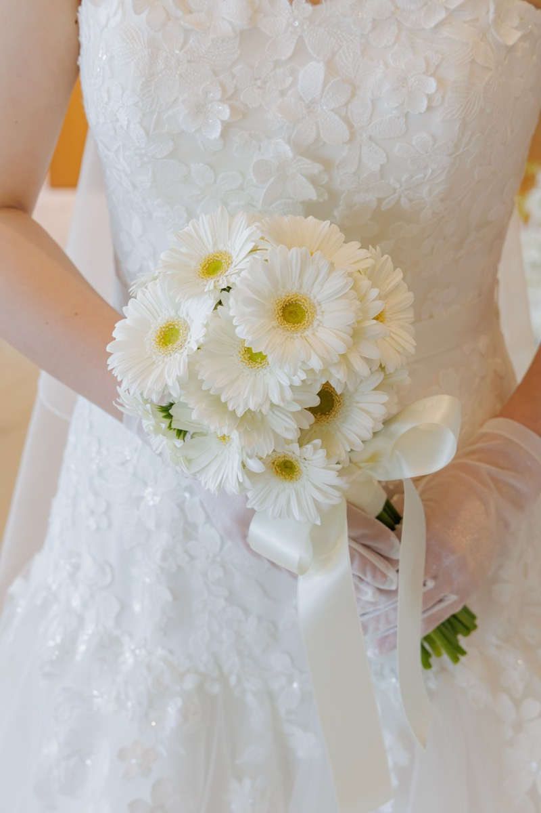
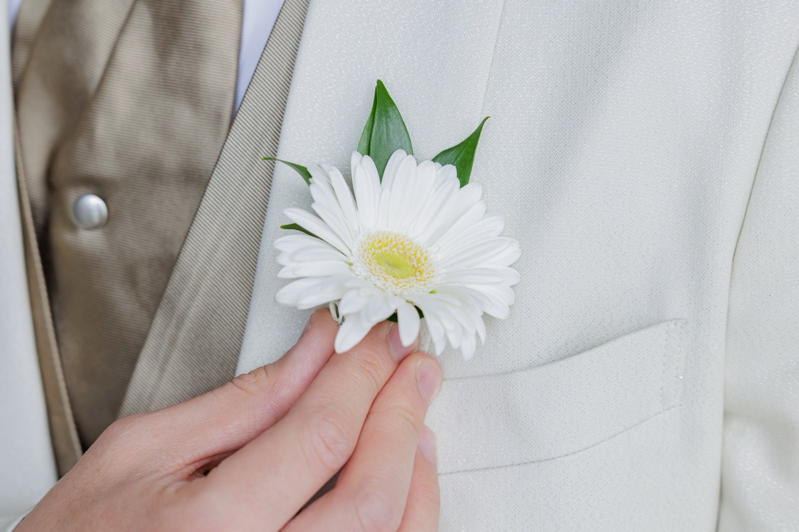

<!doctype html>
<html lang="ja">
<head>
<meta charset="utf-8">
<meta name="viewport" content="width=device-width, initial-scale=1, viewport-fit=cover">
<meta name="robots" content="noindex, nofollow, noarchive">
<style>
:root { color-scheme: light; padding-top: env(safe-area-inset-top, 0px); padding-bottom: env(safe-area-inset-bottom, 0px); }
body { margin: 0; font: 14px/1.5 system-ui, -apple-system, sans-serif; }
img { max-width: 100%; }
[hidden] { display: none !important; }
</style>
<title>花嫁の姿勢タイプチェック</title>
<meta name="description" content="ドレスを着る日までに。体を動かして答えると、ケンダルの姿勢分類にもとづく5タイプから花嫁さんの姿勢のクセがわかります。">
<link rel="preconnect" href="https://fonts.googleapis.com">
<link rel="preconnect" href="https://fonts.gstatic.com" crossorigin>
<link rel="stylesheet" href="https://fonts.googleapis.com/css2?family=Shippori+Mincho+B1:wght@500;700&family=Zen+Kaku+Gothic+New:wght@400;500;700&family=Cormorant+Garamond:ital,wght@1,500&display=swap">
<style>
/* Layout: 1カラムの「招待状」。白いドレスのような明るい地に、ブーケの淡いピンクとグリーンを差す。問いは一枚ずつのカードで、上に動きのイラスト */
/* 白基調の世界観に合わせ、あえてライトテーマのみ */
:root {
  color-scheme: light;
  --bg: #FFFFFF;          /* ドレスの白 */
  --paper: #FFFFFF;
  --tint: #FFF6F7;        /* ほんのり桜色の地 */
  --ink: #5A4F53;         /* やわらかい文字色 */
  --mute: #9A8F93;
  --line: #F1E4E7;
  --sage: #8DB07E;        /* ガーベラの茎 */
  --sage-soft: #F1F7EE;
  --champ: #E8899C;       /* ローズピンク（アクセント） */
  --champ-deep: #D06C82;
  --champ-soft: #FDEEF1;
  --pollen: #F4E99B;      /* 花芯 */
  --skin: #FCE6DC;
  --f-display: "Shippori Mincho B1", "Hiragino Mincho ProN", "Yu Mincho", serif;
  --f-body: "Zen Kaku Gothic New", "Hiragino Sans", "Yu Gothic", sans-serif;
  --f-latin: "Cormorant Garamond", "Times New Roman", serif;
}

* { box-sizing: border-box }
body { background: var(--bg); color: var(--ink); font-family: var(--f-body); font-size: 15px; line-height: 1.8; }
.wrap { max-width: 480px; margin: 0 auto; padding-block: 20px 56px;
  padding-left: max(16px, env(safe-area-inset-left, 0px)); padding-right: max(16px, env(safe-area-inset-right, 0px));
  display: grid; gap: 18px; }
h1, h2, h3 { font-family: var(--f-display); font-weight: 700; margin: 0; text-wrap: balance; letter-spacing: .04em; }
p { margin: 0 }
.small { font-size: 13px; color: var(--mute); line-height: 1.7 }
.latin { font-family: var(--f-latin); font-style: italic; font-weight: 500; letter-spacing: .06em; color: var(--champ); }

/* 写真：細い額縁 */
.photo { margin: 0; position: relative; background: var(--paper); padding: 8px; border: 1px solid var(--line); border-radius: 22px; }
.photo img { display: block; width: 100%; height: 100%; object-fit: cover; max-width: 100%; border-radius: 15px; }
body { background: linear-gradient(180deg, var(--tint) 0, var(--bg) 420px) var(--bg); }

/* ヒーロー */
.hero { display: grid; gap: 22px; padding-top: 8px; }
.hero .photo { aspect-ratio: 4 / 5; max-width: 100%; }
.hero .photo img { object-position: center 40%; }
.hero .stamp { position: absolute; left: 50%; bottom: -20px; transform: translateX(-50%);
  background: var(--paper); border: 1px solid var(--line); border-radius: 999px; padding: 2px 20px; font-size: 22px; white-space: nowrap; }
.hero-text { text-align: center; display: grid; gap: 14px; padding-top: 10px; }
.hero h1 { font-size: 30px; line-height: 1.5; }
.hero h1 small { display: block; font-size: 15px; font-weight: 500; color: var(--mute); letter-spacing: .2em; margin-bottom: 6px; }
.facts { display: flex; justify-content: center; flex-wrap: wrap; gap: 0; font-size: 13px; color: var(--mute); }
.facts span { padding: 0 14px; border-left: 1px solid var(--line); }
.facts span:first-child { border-left: 0 }
.facts b { color: var(--ink); font-weight: 700; font-size: 15px; margin-right: 2px; }

/* ボタン */
.btn { appearance: none; border: 1px solid var(--champ); background: var(--champ); color: #FFFFFF; box-shadow: 0 6px 18px -8px var(--champ);
  font: 700 15px/1 var(--f-body); letter-spacing: .12em; padding: 18px 20px; border-radius: 999px;
  width: 100%; cursor: pointer; text-align: center; text-decoration: none; display: block; transition: transform .15s, opacity .15s; }
.btn:hover { opacity: .88 }
.btn:active { transform: scale(.985) }
.btn.sub { background: var(--paper); color: var(--champ-deep); border-color: var(--line); box-shadow: none; }
.btn.line { background: #06C755; border-color: #06C755; color: #FFFFFF; box-shadow: none; }
.btn[disabled] { opacity: .4; cursor: not-allowed }
:focus-visible { outline: 2px solid var(--champ); outline-offset: 3px; }

/* カード */
.card { background: var(--paper); border: 1px solid var(--line); border-radius: 22px; padding: 26px 22px; display: grid; gap: 16px; box-shadow: 0 10px 30px -18px rgba(208, 108, 130, .35); }
.move { border-radius: 0 12px 12px 0 }
.dress { border-radius: 14px }

/* 動きのイラスト */
.illus { margin: -10px -6px 0; background: var(--tint); border-radius: 16px; padding: 6px 6px 0; }
.illus svg { display: block; width: 100%; height: auto; max-height: 210px; }
.eyebrow { font-size: 12px; letter-spacing: .24em; color: var(--champ); font-weight: 700; }
.sec-title { font-size: 19px; }
.ornament { display: flex; align-items: center; gap: 12px; color: var(--champ); justify-content: center; }
.ornament::before, .ornament::after { content: ""; height: 1px; flex: 1; background: var(--line); }

/* ステージ一覧 */
.stages { list-style: none; margin: 0; padding: 0; display: grid; }
.stages li { display: grid; grid-template-columns: 34px 1fr auto; gap: 12px; align-items: center; padding: 12px 0; border-top: 1px solid var(--line); }
.stages li:first-child { border-top: 0 }
.stages .n { font-family: var(--f-latin); font-style: italic; font-size: 24px; color: var(--champ); text-align: center; }
.stages b { font-weight: 700 }
.stages .cnt { font-size: 13px; color: var(--mute); font-variant-numeric: tabular-nums; }
.prep { display: flex; flex-wrap: wrap; gap: 6px; }
.prep span { font-size: 12px; padding: 4px 12px; border-radius: 999px; background: var(--champ-soft); }

/* タイプ一覧 */
.types { display: grid; gap: 0; }
.types div { display: grid; grid-template-columns: 34px 1fr; gap: 12px; padding: 12px 0; border-top: 1px solid var(--line); align-items: start; }
.types div:first-child { border-top: 0 }
.types i { font-style: normal; font-family: var(--f-latin); font-style: italic; color: var(--champ); font-size: 18px; text-align: center; line-height: 1.5; }
.types b { font-family: var(--f-display); font-size: 16px; display: block; line-height: 1.5 }
.types span { font-size: 13px; color: var(--mute); display: block; }
.types .en { font-size: 14px; color: var(--champ-deep); line-height: 1.4; }
.cite { font-size: 11px; color: var(--mute); line-height: 1.6; }
.result-head .en { font-size: 17px; margin-top: -6px; }
.result-head .silhouette { width: 180px; max-width: 100%; }
.result-head .silhouette svg { display: block; width: 100%; height: auto; }
.kv { display: grid; gap: 10px; }
.kv div { display: grid; grid-template-columns: 7em 1fr; gap: 10px; font-size: 14px; padding-top: 10px; border-top: 1px solid var(--line); }
.kv div:first-child { border-top: 0; padding-top: 0; }
.kv dt { font-weight: 700; color: var(--champ-deep); margin: 0; }
.kv dd { margin: 0; min-width: 0; }

/* 進行 */
.prog { display: grid; gap: 10px; position: sticky; top: env(safe-area-inset-top, 0px); background: var(--tint); padding-block: 10px 6px; z-index: 5; }
body::before { content: ""; position: fixed; inset: 0 0 auto; height: env(safe-area-inset-top, 0px); z-index: 10; background: var(--tint); }
.prog-row { display: flex; align-items: center; justify-content: space-between; gap: 10px; font-size: 13px; }
.back { appearance: none; border: 0; background: none; color: var(--mute); font: 500 13px var(--f-body); cursor: pointer; padding: 6px 0; }
.back.ghost { visibility: hidden }
.count { font-variant-numeric: tabular-nums; color: var(--mute); }
.count b { color: var(--ink); font-size: 15px }
.track { height: 2px; background: var(--line); position: relative; }
.track i { position: absolute; inset: 0 auto 0 0; background: var(--champ); transition: width .4s ease; }
.track .petal { position: absolute; top: 50%; width: 14px; height: 14px; transform: translate(-50%, -50%); transition: left .4s ease; }

/* ステージ扉 */
.stage-card { text-align: center; padding: 0; overflow: hidden; gap: 0; }
.stage-card .photo { border: 0; padding: 0; aspect-ratio: 3 / 2; border-radius: 0; }
.stage-card .photo img { border-radius: 0 }
.stage-card .inner { padding: 26px 22px 28px; display: grid; gap: 12px; justify-items: center; }
.stage-card h1 { font-size: 26px; }
.stage-card .latin { font-size: 22px; }

/* 質問 */
.q { animation: rise .35s ease both; }
.move { background: var(--sage-soft); padding: 14px 16px; display: grid; gap: 4px; border-left: 2px solid var(--sage); }
.move b { font-size: 12px; letter-spacing: .2em; color: var(--sage); }
.qtext { font-size: 20px; line-height: 1.6; }
.scale { display: grid; gap: 10px; margin-top: 6px; }
.dots { display: grid; grid-template-columns: repeat(5, 1fr); align-items: center; justify-items: center; }
.sd { appearance: none; border: 0; background: none; padding: 6px; cursor: pointer; border-radius: 50%; display: grid; place-items: center; }
.sd i { display: block; border-radius: 50%; border: 1.5px solid var(--champ); transition: background .2s, transform .2s; }
.sd.c0 i, .sd.c4 i { width: 44px; height: 44px }
.sd.c1 i, .sd.c3 i { width: 34px; height: 34px }
.sd.c2 i { width: 24px; height: 24px; border-color: var(--line) }
.sd.c3 i, .sd.c4 i { border-color: var(--mute) }
.sd:hover i { transform: scale(1.06) }
.sd.on i { background: var(--champ); border-color: var(--champ) }
.sd.on.c3 i, .sd.on.c4 i { background: var(--mute); border-color: var(--mute) }
.sd.on.c2 i { background: var(--line) }
.ends { display: flex; justify-content: space-between; font-size: 12px; color: var(--mute); }
.picked { text-align: center; min-height: 1.8em; font-weight: 700; color: var(--champ); }
.tip { text-align: center }

/* 分析中 */
.analyzing { text-align: center; padding: 48px 22px; justify-items: center; }
.bloom { width: 84px; height: 84px; animation: spin 6s linear infinite; }

/* 結果 */
.result-head { text-align: center; padding: 30px 22px; gap: 12px; justify-items: center; }
.result-head .code { font-family: var(--f-latin); font-style: italic; font-size: 15px; color: var(--champ); letter-spacing: .1em; }
.result-head h1 { font-size: 28px; line-height: 1.5; }
.result-head .nick { font-size: 13px; padding: 4px 14px; border: 1px solid var(--champ); color: var(--champ); border-radius: 999px; }
.result-head p { max-width: 30em }
.bars { display: grid; gap: 10px; }
.bar { display: grid; grid-template-columns: 8.6em 1fr 2.6em; gap: 10px; align-items: center; font-size: 13px; }
.bar .t { height: 6px; background: var(--line); border-radius: 3px; overflow: hidden; }
.bar .t i { display: block; height: 100%; background: var(--mute); border-radius: 3px; }
.bar.top .t i { background: var(--champ) }
.bar.top { font-weight: 700 }
.bar .v { text-align: right; font-variant-numeric: tabular-nums; color: var(--mute); }
.list { list-style: none; margin: 0; padding: 0; display: grid; gap: 10px; }
.list li { display: grid; grid-template-columns: 14px 1fr; gap: 10px; }
.list li::before { content: ""; width: 6px; height: 6px; border-radius: 50%; background: var(--champ); margin-top: .75em; justify-self: center; }
.dress { background: var(--champ-soft); padding: 16px; display: grid; gap: 4px; }
.dress b { font-size: 12px; letter-spacing: .2em; color: var(--champ); }
.dress-photo { margin: 0; border-radius: 16px; overflow: hidden; aspect-ratio: 1; max-width: 100%; background: var(--tint); }
.dress-photo img { width: 100%; height: 100%; object-fit: cover; object-position: 60% 8%; display: block; }
.howto { list-style: none; margin: 0; padding: 0; display: grid; gap: 18px; }
.howto li { display: grid; grid-template-columns: 30px 1fr; gap: 12px; }
.howto .n { font-family: var(--f-latin); font-style: italic; font-size: 24px; color: var(--champ); line-height: 1.2; }
.howto .body { display: grid; gap: 8px; min-width: 0 }
.codebox { display: flex; gap: 8px; align-items: center; }
.codebox code { flex: 1; min-width: 0; font: 700 16px var(--f-body); letter-spacing: .1em; padding: 10px 14px; background: var(--tint); border: 1px dashed var(--champ); border-radius: 10px; text-align: center; user-select: all; }
.codebox button { appearance: none; border: 1px solid var(--line); background: var(--paper); color: var(--ink); font: 500 13px var(--f-body); padding: 10px 14px; border-radius: 10px; cursor: pointer; }
.pair { display: grid; grid-template-columns: 2fr 3fr; gap: 16px; align-items: center; }
.pair .photo { aspect-ratio: 1; padding: 5px; }
.note { font-size: 12px; color: var(--mute); text-align: center; line-height: 1.7; }
.preview-link { text-align: center; font-size: 13px; }
.preview-link a { color: var(--champ); }

@keyframes rise { from { opacity: .001; transform: translateY(8px) } to { opacity: 1; transform: none } }
@keyframes spin { to { transform: rotate(360deg) } }
@media (prefers-reduced-motion: reduce) { .q { animation: none } .bloom { animation: none } .track i, .track .petal { transition: none } }
@media (max-width: 380px) { .hero h1 { font-size: 26px } .qtext { font-size: 18px } .sd.c0 i, .sd.c4 i { width: 38px; height: 38px } }
</style>
</head>
<body>


<div class="wrap" id="app"></div>

<script>
// ===== ここだけ書きかえれば OK =====
const SETTINGS = {
  lineId: "",                 // LINE公式アカウントのID（例 "@123abcde"）。入れるとボタンが押せるようになります
  author: "理学療法士 小宮",
};

const SAVE_KEY = "bridal-posture-v5";

// ケンダルの姿勢分類（Kendall）の4タイプ＋フォワードヘッドの5タイプ。並び順＝同点のときの優先順
const TYPES = [
  { code: "K01", name: "カイホロードシス", en: "Kyphotic-Lordotic Posture", nick: "猫背と反り腰が重なったタイプ",
    catch: "背中の丸み（胸椎の後弯）と腰の反り（腰椎の前弯）が、どちらも強くなっている姿勢です。頭が前に出て、骨盤は前に傾いています。",
    dress: "背中の上のほうが丸みを帯び、首の付け根がふっくらと盛り上がって見えやすいタイプです。頭と肩が前に出るため、アップスタイルのうしろ姿では首が短く、横からの写真では背中が丸く写りがちです。",
    align: ["頭が前に出る（頭部前方位）", "背中が丸い（胸椎後弯の増大）", "腰が反る（腰椎前弯の増大）", "骨盤が前に傾く（骨盤前傾）"],
    tight: "首のうしろ・股関節の前（腸腰筋）・腰", weak: "首の前・背中の上部・お腹（外腹斜筋）・もも裏",
    one: { name: "横向きで胸ひらき", how: "横向きに寝て、両膝を90度に曲げて重ね、両腕を前にそろえます。息を吐いて肋骨を下げ、膝が離れないようにしたまま、上の腕を天井から反対側の床へ、胸ごとゆっくり開きます。目線も手を追いかけましょう。元にもどして、左右10回ずつ。" } },
  { code: "K02", name: "ロードシス", en: "Lordotic Posture", nick: "反り腰タイプ",
    catch: "腰の反り（腰椎の前弯）が強く、骨盤が前に傾いている姿勢です。背中から上はほぼまっすぐです。",
    dress: "胸を張ろうとして、背中ごと反りやすいタイプです。胸元のふちが体から浮いたり、背中側のふちにお肉がのったりしやすく、横からの写真では上半身がうしろに反って見えがちです。",
    align: ["腰が反る（腰椎前弯の増大）", "骨盤が前に傾く（骨盤前傾）", "股関節が軽く曲がる（股関節屈曲位）"],
    tight: "腰（脊柱起立筋の腰部）・股関節の前（腸腰筋）", weak: "お腹（腹筋群）・もも裏（ハムストリングス）",
    one: { name: "四つ這いで胸ひねり", how: "四つ這いになり、息を吐いてお腹を軽く締めます。腰が反らないようにしたまま、片腕を反対の腕の下へくぐらせてから、天井へ向けて大きくひらきます。目線も手を追いかけましょう。左右10回ずつ。" } },
  { code: "K03", name: "フラットバック", en: "Flat-Back Posture", nick: "背中が平らなタイプ",
    catch: "腰の自然なカーブ（腰椎の前弯）が少なく、骨盤がうしろに傾いている姿勢です。背中全体が平らに見えます。",
    dress: "背中が平らで、胸を自然に起こしにくいタイプです。背中の開いたドレスでは肩甲骨まわりのメリハリが出にくく、うしろ姿がのっぺりとした印象になりやすくなります。",
    align: ["腰のカーブが少ない（腰椎前弯の減少）", "骨盤がうしろに傾く（骨盤後傾）", "股関節が伸びる（股関節伸展位）", "頭がやや前に出る"],
    tight: "もも裏（ハムストリングス）", weak: "股関節の前（腸腰筋）・腰の伸筋",
    one: { name: "長座で骨盤を立てて膝の曲げ伸ばし", how: "脚を前に伸ばして床に座り、お尻の骨で床を押して骨盤を立て、腰に軽いカーブをつくります。その腰のまま両腕を斜め上へ伸ばし、かかとを床にすべらせて膝の曲げ伸ばしを10回。腰が丸まりそうなときは、膝を曲げる幅を小さくして大丈夫です。" } },
  { code: "K04", name: "スウェイバック", en: "Sway-Back Posture", nick: "上半身がうしろにもたれるタイプ",
    catch: "骨盤が前にすべり出て、上半身がうしろにもたれている姿勢です。背中は長く丸くなり、膝は伸びきりがちです。",
    dress: "胸がすっと起きにくく、肩が前に入りやすいタイプです。背中の開いたドレスでは肩甲骨のラインがきれいに出にくく、うしろ姿がどこか疲れた印象に見えることがあります。",
    align: ["骨盤が前にずれる（骨盤の前方偏位）", "上半身がうしろに傾く", "背中が長く丸い（胸椎後弯の増大）", "膝が伸びきる（膝の過伸展）"],
    tight: "もも裏（ハムストリングス）・お腹の上部（腹直筋上部）", weak: "股関節の前（腸腰筋）・お腹の横（外腹斜筋）・背中の上部",
    one: { name: "座って骨盤を立てて膝上げ", how: "椅子に浅く座り、骨盤を立てて腰に軽いカーブをつくります。両腕を斜め上に伸ばし、その姿勢を保ったまま、片膝を胸に近づけるようにゆっくり持ち上げて、おろします。上半身がうしろに倒れないように、左右交互に10回ずつ。" } },
  { code: "K05", name: "フォワードヘッド", en: "Forward Head Posture", nick: "頭が前に出るタイプ",
    catch: "頭が肩より前に出て、首の下のほうは丸まり、上のほうは反っている姿勢です。頭の重さを、首と肩がずっと支えつづけています。",
    dress: "頭が前に出るぶん、首がすっきり長く見えにくいタイプです。アップスタイルやベールをかけた横顔では、あごの下がたるんだように写ったり、首すじからデコルテのラインが詰まって見えたりしがちです。",
    align: ["耳が肩より前に出る（頭部前方位）", "首の上のほうが反る（上位頸椎の伸展）", "首の下のほうが丸まる（下位頸椎の屈曲）", "肩が前に入りやすい（肩甲骨の外転）"],
    tight: "首のうしろの付け根（後頭下筋群）・首の横（胸鎖乳突筋）・肩の上（僧帽筋上部）", weak: "首の前の深いところ（頸部深層屈筋）・肩甲骨のまわり（菱形筋・僧帽筋下部）",
    one: { name: "座って胸ひねり", how: "椅子に浅く座り、両腕を胸の前で組みます。息を吐いて肋骨を下げ、骨盤は正面に向けたまま、胸から上だけを右へ、左へとゆっくりひねります。顔も一緒に振り向き、首のうしろは長く保ったまま。左右10回ずつ。" } },
];

// how があるものは体を動かして答える問題。types は点が入るタイプの番号
const QUESTIONS = [
  { t: "写真を見返すと、肩が前に入って鎖骨が見えにくい", types: [0, 3, 4] },
  { t: "座っていると、気づくと骨盤がうしろに倒れて背中が丸まっている", types: [2, 3] },
  { t: "横から見ると、お腹が前に出てお尻もうしろに突き出ている", types: [0, 1] },
  { t: "横から見ると、耳が肩より前にあり、あごが前に出ている", types: [4, 0] },
  { t: "写真で、お尻が平らで下がって見える", types: [2, 3] },
  { t: "立つとき、膝をぴんと伸ばしきって、うしろにもたれるように立っている", types: [3, 0] },
  { t: "長く立っていると、腰が疲れたり張ったりする", types: [1, 0] },
  { how: "ペットボトルをブーケに見立てて持ち、背すじを伸ばす", t: "腰ばかり反って、お腹が前に出る", types: [1, 0] },
  { how: "鏡の前で、力を抜いてまっすぐ立つ", t: "手の甲が前を向いている", types: [0, 3, 4] },
  { how: "かかと・お尻・背中を壁につけて立つ", t: "後頭部が壁につかない、またはつけると苦しい", types: [4, 0, 2, 3] },
  { how: "壁に背中をつけたまま、腰と壁のすき間に手を入れる", t: "手のひらがすっと通り抜けるほどすき間がある", types: [1, 0] },
  { how: "まっすぐ立ち、片膝を腰の高さまで上げて5秒キープ（ふらつくときは壁に手をそえて）", t: "膝が腰の高さまで上がらない。または、上げると体がうしろにのけぞる・立っている側の膝が曲がる", types: [3, 2, 0] },
  { how: "足を腰幅に開き、かかとを床につけたまま、ゆっくり深くしゃがむ", t: "深くしゃがもうとすると、うしろに倒れそうになる", types: [1, 3, 0] },
  { how: "鏡に横向きで立ち、耳・肩・腰・くるぶしの位置を見る", t: "くるぶしより腰（骨盤）が前に出ている", types: [3] },
  { how: "立ったまま、ゆっくり天井を見上げる", t: "首のうしろがつまる感じがする", types: [4, 0] },
  { how: "仰向けで、脚をまっすぐ伸ばして寝る", t: "腰と床のすき間が大きく、手のひらが通る", types: [1] },
  { how: "脚を前に伸ばして床に座り、背すじを伸ばす", t: "背すじを伸ばせず、腰が丸まる", types: [2, 3] },
];

// 体勢ごとにまとめ、立ったり寝たりの往復をなくす
const STAGES = [
  { title: "ふだんのわたし", latin: "Everyday", where: "そのまま座って", lead: "最近の写真や、ふだんの立ち姿を思い浮かべて。直感で答えてください。", prep: [], qs: [0, 1, 2, 3, 4, 5, 6], img: "img/hands.jpg", pos: "center 60%" },
  { title: "鏡と壁の前で", latin: "Mirror", where: "鏡の前に立って", lead: "全身が映る鏡と、背中をつけられる壁があると安心です。", prep: ["鏡", "壁", "ペットボトル"], qs: [7, 8, 9, 10, 11], img: "img/bouquet-wide.jpg", pos: "center 40%" },
  { title: "ドレスで動くように", latin: "Motion", where: "立って、しゃがんで", lead: "両腕を広げられるくらいのスペースをあけてください。まわりに物がないか確かめてから始めましょう。", prep: ["両腕を広げられる床", "鏡"], qs: [12, 13, 14], img: "img/aisle.jpg", pos: "center 55%" },
  { title: "床でひと息", latin: "Breathe", where: "床に寝て", lead: "ヨガマットやお布団の上で。最後の2問です。", prep: ["マットか布団"], qs: [15, 16], img: "img/hands.jpg", pos: "center 30%" },
];

const FLOW = STAGES.flatMap((s, si) => [{ kind: "stage", si }, ...s.qs.map((qi, k) => ({ kind: "q", si, qi, k }))]);

const SCALE = [
  { label: "とてもあてはまる", v: 4 }, { label: "ややあてはまる", v: 3 }, { label: "どちらとも言えない", v: 2 },
  { label: "あまりあてはまらない", v: 1 }, { label: "まったくあてはまらない", v: 0 },
];

// 各タイプの平均点（0〜4）
function scores(answers) {
  const sum = TYPES.map(() => 0), n = TYPES.map(() => 0);
  QUESTIONS.forEach((q, i) => q.types.forEach(t => { n[t]++; sum[t] += answers[i] ?? 0; }));
  return TYPES.map((_, t) => n[t] ? sum[t] / n[t] : 0);
}
// まず背骨・骨盤の4タイプ（0〜3）で一番高いものを選ぶ。
// それがはっきりしない（平均2.5未満）のに首の点数のほうが高いときだけ、フォワードヘッド（4）にする
const FHP = 4;
function topType(answers) {
  const s = scores(answers);
  const trunk = [0, 1, 2, 3].sort((a, b) => s[b] - s[a] || a - b)[0];
  return s[trunk] < 2.5 && s[FHP] > s[trunk] ? FHP : trunk;
}

const esc = s => String(s).replace(/[&<>"']/g, c => ({ "&": "&amp;", "<": "&lt;", ">": "&gt;", '"': "&quot;", "'": "&#39;" }[c]));
const lineFriendUrl = () => SETTINGS.lineId ? `https://line.me/R/ti/p/${SETTINGS.lineId.trim()}` : "";
// LINEのトーク画面を開き、結果コードを入力した状態にする（送信は本人が押す）
const lineMessageUrl = text => SETTINGS.lineId ? `https://line.me/R/oaMessage/${SETTINGS.lineId.trim()}/?${encodeURIComponent(text)}` : "";
const lineKeyword = t => `結果コード ${t.code}`;

// ガーベラの花びら（進行バーと分析中に使う）
function gerbera(size = 14, petals = 12) {
  const p = Array.from({ length: petals }, (_, i) =>
    `<ellipse cx="50" cy="24" rx="7" ry="22" transform="rotate(${(360 / petals) * i} 50 50)" fill="var(--paper)" stroke="var(--champ)" stroke-width="2.5"/>`).join("");
  return `<svg viewBox="0 0 100 100" width="${size}" height="${size}" aria-hidden="true">${p}<circle cx="50" cy="50" r="13" fill="var(--pollen)" stroke="var(--sage)" stroke-width="2.5"/></svg>`;
}

/* ---------- 質問ごとの動きのイラスト ----------
   viewBox 240×170、床は y=160。spine（横向きの胴）か body（正面の胴の多角形）、
   limbs（手前の手足）、far（奥の手足・うすく描く）、head、face（顔の向き）、torso（輪郭で描く胴）、
   mark（チェックするところをピンクの円で示す）、props（壁・椅子などの小道具） */
const INK = "#8A7479", FAR = "#D9C6CB", DRESS = "#F9D3DB";
const pl = pts => pts.map(p => p.join(",")).join(" ");
const line = (pts, c, w) => `<polyline points="${pl(pts)}" fill="none" stroke="${c}" stroke-width="${w}" stroke-linecap="round" stroke-linejoin="round"/>`;
const FLOOR = `<line x1="20" y1="161" x2="220" y2="161" stroke="#EBD9DD" stroke-width="3" stroke-linecap="round"/>`;
const PLUMB = x => `<line x1="${x}" y1="12" x2="${x}" y2="158" stroke="var(--sage)" stroke-width="2" stroke-dasharray="4 5" opacity=".8"/>`;
const WALL = `<rect x="74" y="8" width="16" height="153" rx="3" fill="#F3E7EA"/><line x1="90" y1="8" x2="90" y2="161" stroke="#E4CDD3" stroke-width="2"/>`;
const MAT = `<rect x="24" y="142" width="196" height="9" rx="4.5" fill="var(--sage-soft)" stroke="#CFE0C7" stroke-width="2"/>`;
const arrow = (d, c = "var(--champ-deep)") => `<path d="${d}" fill="none" stroke="${c}" stroke-width="2.6" stroke-linecap="round" stroke-linejoin="round" marker-end="url(#ah)"/>`;
const flower = (x, y, r = 11) => `<line x1="${x}" y1="${y + r - 2}" x2="${x}" y2="${y + r + 14}" stroke="var(--sage)" stroke-width="4" stroke-linecap="round"/>` +
  Array.from({ length: 10 }, (_, i) => `<ellipse cx="${x}" cy="${y - r * .55}" rx="${r * .28}" ry="${r * .55}" transform="rotate(${i * 36} ${x} ${y})" fill="#FFFFFF" stroke="var(--champ)" stroke-width="1.4"/>`).join("") +
  `<circle cx="${x}" cy="${y}" r="${r * .3}" fill="var(--pollen)"/>`;

// 頭。face は顔の向き（度）：0＝右向き、-90＝上向き、"front"＝正面。
// 鼻と目を顔の側に、髪を頭のうしろ側にかぶせて、前後がひと目でわかるようにする
const ARM = "#B39AA1";
function headSvg([hx, hy], face) {
  const R = 13, at = (deg, r) => { const a = deg * Math.PI / 180; return `${(hx + r * Math.cos(a)).toFixed(1)},${(hy + r * Math.sin(a)).toFixed(1)}`; };
  const skin = `<circle cx="${hx}" cy="${hy}" r="${R}" fill="var(--skin)" stroke="${INK}" stroke-width="2.5"/>`;
  if (face === "front") {
    const hair = `<path d="M${at(-200, R + 1)} A${R + 1} ${R + 1} 0 0 1 ${at(20, R + 1)} Q${hx} ${hy - 8} ${at(-200, R + 1)}Z" fill="${INK}"/>`;
    const eyes = [-5, 5].map(dx => `<circle cx="${hx + dx}" cy="${hy + 1}" r="1.8" fill="${INK}"/>`).join("");
    return skin + hair + eyes + `<path d="M${hx - 3} ${hy + 6} Q${hx} ${hy + 8} ${hx + 3} ${hy + 6}" fill="none" stroke="${INK}" stroke-width="1.6" stroke-linecap="round"/>`;
  }
  const f = face;
  const hair = `<path d="M${at(f - 65, R + 1)} A${R + 1} ${R + 1} 0 0 0 ${at(f + 150, R + 1)} Q${at(f + 200, 2)} ${at(f - 65, R + 1)}Z" fill="${INK}"/>`;
  const nose = `<path d="M${at(f - 24, R - 1)} L${at(f + 4, R + 5)} L${at(f + 18, R - 1)}" fill="var(--skin)" stroke="${INK}" stroke-width="2.2" stroke-linejoin="round"/>`;
  const eye = `<circle cx="${at(f - 28, 7).split(",")[0]}" cy="${at(f - 28, 7).split(",")[1]}" r="1.9" fill="${INK}"/>`;
  return skin + nose + hair + eye;
}

function fig(p) {
  const out = [];
  out.push(`<defs><marker id="ah" viewBox="0 0 10 10" refX="6" refY="5" markerWidth="5" markerHeight="5" orient="auto-start-reverse"><path d="M0,0 L10,5 L0,10 z" fill="var(--champ-deep)"/></marker></defs>`);
  out.push(p.props || "");
  (p.far || []).forEach(l => out.push(line(l, FAR, 8)));
  if (p.neck) { out.push(line(p.neck, INK, 12)); out.push(line(p.neck, "var(--skin)", 7)); }
  if (p.spine) { out.push(line(p.spine, INK, 25)); out.push(line(p.spine, DRESS, 20)); }
  if (p.torso) out.push(`<path d="${p.torso}" fill="${DRESS}" stroke="${INK}" stroke-width="2.5" stroke-linejoin="round"/>`);
  if (p.body) out.push(`<polygon points="${pl(p.body)}" fill="${DRESS}" stroke="${INK}" stroke-width="2.5" stroke-linejoin="round"/>`);
  (p.extra || []).forEach(e => out.push(e));
  (p.limbs || []).forEach(l => out.push(line(l, INK, 8)));
  (p.arms || []).forEach(l => out.push(line(l, ARM, 7)));
  // headRot：寝ている図などで、頭ごと回す（頭のてっぺんの向きを変える）
  const h = headSvg(p.head, p.face ?? 0);
  out.push(p.headRot ? `<g transform="rotate(${p.headRot} ${p.head[0]} ${p.head[1]})">${h}</g>` : h);
  (p.marks || []).forEach(([x, y, r]) => out.push(`<circle cx="${x}" cy="${y}" r="${r}" fill="var(--champ)" fill-opacity=".18" stroke="var(--champ)" stroke-width="2" stroke-dasharray="3 3"/>`));
  out.push(p.over || "");
  return `<svg viewBox="0 0 240 170" role="img" aria-label="${esc(p.alt || "")}">${out.join("")}</svg>`;
}

// 横向き（右向き）で立つ基本の脚
const LEGS_SIDE = { far: [[[108, 100], [105, 130], [103, 157], [113, 158]]], legs: [[108, 100], [110, 130], [112, 157], [123, 158]] };
// 正面で立つ基本の脚
const legsFront = (l = 110, r = 130, top = 104) => [[[l, top], [l - 1, 132], [l - 2, 157]], [[r, top], [r + 1, 132], [r + 2, 157]]];

const SIDE_ARM = [[112, 60], [113, 82], [114, 100]];
const BELLY = `<ellipse cx="121" cy="90" rx="10" ry="12" fill="${DRESS}" stroke="${INK}" stroke-width="2.5"/>`;
const BUTT = `<ellipse cx="99" cy="104" rx="10" ry="10" fill="${DRESS}" stroke="${INK}" stroke-width="2.5"/>`;
const note = (x, y, s, anchor = "middle") => `<text x="${x}" y="${y}" text-anchor="${anchor}" font-size="10" font-weight="700" fill="var(--champ-deep)" font-family="Zen Kaku Gothic New, sans-serif">${s}</text>`;

// 輪郭で描く横向き（右向き）の胴。左がうしろ（背中）、右が前（お腹）
// 反り腰：腰が前にくびれ、お尻がうしろに、下腹が前に出る
const TORSO_LORD = "M110,46 C103,50 101,64 105,74 C108,81 111,85 106,92 C99,99 95,105 97,111 C99,116 105,116 110,115 L121,115 C127,110 129,101 127,94 C125,87 120,83 120,77 C120,69 124,62 123,56 C122,50 118,46 114,46 Z";
// 猫背＋反り腰：背中の上が丸く、頭が前に出る
const TORSO_KL = "M116,47 C102,47 97,62 103,74 C107,81 111,85 106,92 C99,99 95,105 97,111 C99,116 105,116 110,115 L121,115 C127,110 129,101 127,94 C125,87 119,83 119,77 C119,69 122,60 124,52 C124,49 121,47 118,47 Z";
// ほぼまっすぐな胴
const TORSO_NEUTRAL = "M106,50 C101,56 101,72 103,84 C104,94 101,100 101,108 C101,114 105,117 110,117 L118,117 C122,112 122,100 121,90 C120,80 120,72 121,64 C122,58 120,52 116,50 Z";
const LEGS_TORSO = { far: [[[109, 114], [108, 136], [107, 157], [117, 158]]], legs: [[114, 114], [115, 136], [116, 157], [127, 158]] };

const FIGS = [
  // 0 写真で肩が前に入る
  { alt: "肩が前に入り、頭も前に出ている横向きの立ち姿", props: FLOOR + PLUMB(108), spine: [[116, 56], [106, 78], [108, 100]], head: [126, 36],
    far: LEGS_SIDE.far, limbs: [LEGS_SIDE.legs, [[120, 62], [126, 82], [127, 100]]], marks: [[121, 61, 15]] },
  // 1 座ると骨盤がうしろに倒れて背中が丸まる
  { alt: "椅子に座って骨盤がうしろに倒れ、背中が丸まっている横向きの姿", props: FLOOR + `<polyline points="80,58 80,112 132,112" fill="none" stroke="#E4CDD3" stroke-width="6" stroke-linecap="round" stroke-linejoin="round"/><line x1="82" y1="112" x2="82" y2="158" stroke="#E4CDD3" stroke-width="5"/><line x1="128" y1="112" x2="128" y2="158" stroke="#E4CDD3" stroke-width="5"/>`,
    spine: [[114, 60], [98, 80], [100, 104]], head: [128, 46], face: 15,
    far: [[[100, 104], [138, 104], [140, 156], [150, 157]]], limbs: [[[102, 106], [142, 108], [144, 156], [154, 157]], [[116, 66], [128, 86], [142, 96]]], marks: [[100, 98, 14]] },
  // 2 お腹が前・お尻がうしろ
  { alt: "腰が反って、お腹が前に、お尻がうしろに突き出ている横向きの姿", props: FLOOR, torso: TORSO_LORD, head: [114, 32],
    far: LEGS_TORSO.far, limbs: [LEGS_TORSO.legs], arms: [[[111, 54], [108, 72], [110, 86]]], marks: [[110, 86, 9]],
    over: arrow("M134 98 L152 98") + arrow("M90 106 L72 106") + note(156, 102, "お腹", "start") + note(68, 110, "お尻", "end") + note(92, 82, "反る", "end") },
  // 3 あごが前に出る
  { alt: "耳が肩より前に出て、あごが前に突き出ている横向きの立ち姿", props: FLOOR + PLUMB(110), torso: TORSO_NEUTRAL, neck: [[111, 52], [119, 44]], head: [125, 36], face: -12,
    far: LEGS_TORSO.far, limbs: [LEGS_TORSO.legs], arms: [[[111, 56], [112, 78], [113, 96]]],
    marks: [[125, 36, 17]], over: arrow("M112 10 L124 10") + arrow("M144 46 L158 46") + note(162, 50, "あご", "start") },
  // 4 お尻が平らで下がる
  { alt: "骨盤がうしろに傾き、お尻が平らに見える横向きの姿", props: FLOOR + PLUMB(110), spine: [[114, 54], [112, 78], [111, 100]], head: [120, 32],
    far: [[[110, 100], [108, 130], [106, 157], [116, 158]]], limbs: [[[111, 100], [112, 130], [113, 157], [124, 158]], [[114, 60], [115, 82], [116, 100]]], marks: [[103, 102, 12]] },
  // 5 膝を伸ばしきってもたれて立つ
  { alt: "膝をうしろに反らせて伸ばしきり、うしろにもたれて立つ横向きの姿", props: FLOOR + PLUMB(112), spine: [[106, 54], [110, 78], [116, 100]], head: [110, 32],
    far: [[[115, 100], [106, 130], [110, 157], [120, 158]]], limbs: [[[116, 100], [108, 130], [114, 157], [125, 158]], [[106, 60], [108, 82], [112, 98]]], marks: [[107, 130, 11]] },
  // 6 長く立つと腰が張る
  { alt: "腰に手をあてて立っている横向きの姿", props: FLOOR, spine: [[110, 54], [107, 78], [108, 100]], head: [114, 32],
    far: LEGS_SIDE.far, limbs: [LEGS_SIDE.legs, [[110, 60], [96, 78], [101, 92]]], marks: [[103, 90, 13]] },
  // 7 ブーケを持って背すじを伸ばす
  { alt: "ブーケを持って背すじを伸ばすと、腰が反ってお腹が前に出る横向きの姿", props: FLOOR, torso: TORSO_LORD, head: [114, 32],
    far: LEGS_TORSO.far, limbs: [LEGS_TORSO.legs, [[112, 56], [118, 74], [134, 80]]], marks: [[110, 86, 9]],
    over: flower(142, 74, 12) + arrow("M134 100 L152 100") + note(156, 104, "お腹", "start") + note(96, 82, "腰が反る", "end") },
  // 8 鏡の前で手の甲の向き
  { alt: "鏡の前で力を抜いて立ち、手の甲が前を向いている正面の姿", props: `<rect x="66" y="6" width="108" height="155" rx="14" fill="#FFFFFF" stroke="#EBD9DD" stroke-width="3"/>` + FLOOR,
    body: [[102, 52], [138, 52], [134, 104], [106, 104]], head: [120, 32], face: "front",
    limbs: [...legsFront(), [[102, 54], [96, 80], [95, 100]], [[138, 54], [144, 80], [145, 100]]],
    extra: [`<ellipse cx="94" cy="106" rx="6" ry="8" fill="var(--skin)" stroke="${INK}" stroke-width="2.5"/>`, `<ellipse cx="146" cy="106" rx="6" ry="8" fill="var(--skin)" stroke="${INK}" stroke-width="2.5"/>`],
    marks: [[94, 106, 12], [146, 106, 12]] },
  // 9 壁に立つ（後頭部）
  { alt: "かかと・お尻・背中を壁につけ、後頭部が壁から離れている横向きの姿", props: WALL + FLOOR, spine: [[102, 54], [100, 100]], head: [114, 32],
    far: [[[100, 100], [99, 130], [98, 157], [108, 158]]], limbs: [[[101, 100], [102, 130], [102, 157], [113, 158]], [[104, 60], [104, 82], [105, 100]]], marks: [[96, 32, 9]],
    over: arrow("M100 40 L93 40") },
  // 10 腰と壁のすき間が大きい
  { alt: "壁と腰のすき間に手を入れている横向きの姿", props: WALL + FLOOR, spine: [[102, 54], [108, 80], [101, 102]], head: [106, 32],
    far: [[[100, 102], [99, 130], [98, 157], [108, 158]]], limbs: [[[101, 102], [102, 130], [102, 157], [113, 158]], [[106, 60], [102, 72], [97, 82]]], marks: [[96, 82, 11]] },
  // 11 片膝を腰の高さまで上げる
  { alt: "片膝を腰の高さまで上げたとき、体がうしろにのけぞり、立っている側の膝が曲がっている横向きの姿", props: FLOOR, spine: [[104, 56], [110, 100]], head: [105, 34], face: -8,
    limbs: [[[109, 100], [116, 128], [109, 157], [120, 158]], [[112, 100], [138, 100], [138, 130], [148, 132]], [[104, 62], [96, 82], [102, 98]]],
    marks: [[116, 128, 10], [98, 48, 12]], over: arrow("M156 122 L156 104") + `<line x1="96" y1="100" x2="170" y2="100" stroke="var(--sage)" stroke-width="2" stroke-dasharray="4 5"/>` + note(174, 104, "腰の高さ", "start") + note(82, 50, "のけぞる", "end") + note(100, 132, "膝が曲がる", "end") },
  // 12 深くしゃがむ（腰を丸められず、うしろに倒れそうになる）
  { alt: "深くしゃがもうとすると腰が反ったまま丸められず、うしろに倒れそうになっている横向きの姿", props: FLOOR,
    spine: [[98, 122], [94, 104], [100, 84]], head: [108, 64], face: -10,
    far: [[[98, 124], [132, 118], [120, 156], [132, 158]]], limbs: [[[100, 126], [138, 120], [124, 156], [136, 158]], [[100, 88], [124, 96], [146, 92]]],
    marks: [[92, 106, 12]], over: arrow("M94 50 Q78 54 72 70") + note(84, 40, "うしろに倒れそう", "middle") },
  // 13 くるぶしより骨盤が前
  { alt: "骨盤がくるぶしより前に出て、上半身がうしろに傾いた横向きの姿", props: FLOOR + PLUMB(111), spine: [[104, 54], [106, 78], [120, 102]], head: [110, 32],
    far: [[[119, 102], [113, 130], [108, 157], [118, 158]]], limbs: [[[120, 102], [115, 130], [111, 157], [122, 158]], [[104, 60], [106, 82], [110, 98]]], marks: [[122, 100, 13]],
    over: `<circle cx="111.5" cy="151" r="4.5" fill="#FFFFFF" stroke="var(--champ-deep)" stroke-width="2.4"/>` + note(122, 146, "くるぶし", "start") + note(140, 104, "腰", "start") },
  // 14 天井を見上げる
  { alt: "立ったまま天井を見上げている横向きの姿", props: FLOOR, spine: [[110, 56], [108, 100]], head: [112, 34], face: -60,
    far: LEGS_SIDE.far, limbs: [LEGS_SIDE.legs, [[110, 62], [111, 82], [112, 100]]], marks: [[101, 50, 10]],
    over: arrow("M128 36 Q136 20 126 8") },
  // 15 仰向けで腰と床のすき間
  { alt: "仰向けで脚を伸ばして寝ると、腰と床のすき間が大きい姿", props: MAT, spine: [[64, 132], [90, 124], [118, 132]], head: [46, 130], face: -90,
    far: [[[118, 132], [150, 134], [184, 134]]], limbs: [[[118, 134], [150, 136], [186, 136]], [[70, 128], [84, 136], [92, 138]]], marks: [[90, 136, 10]] },
  // 16 長座で背すじが伸ばせない
  { alt: "脚を前に伸ばして床に座り、腰が丸まっている横向きの姿", props: MAT, spine: [[80, 134], [86, 110], [100, 94]], head: [114, 84],
    far: [[[80, 136], [178, 136]]], limbs: [[[82, 138], [180, 138]], [[100, 98], [118, 118], [134, 130]]], marks: [[82, 116, 13]] },
];

// 結果画面のシルエット（TYPES と同じ並び）
const TYPE_FIGS = [
  { alt: "カイホロードシスの横向きの姿勢", props: FLOOR + PLUMB(110), torso: TORSO_KL, head: [126, 36], far: LEGS_TORSO.far, limbs: [LEGS_TORSO.legs], arms: [[[114, 56], [118, 76], [120, 94]]] },
  { ...FIGS[2], alt: "ロードシスの横向きの姿勢", props: FLOOR + PLUMB(110), marks: [], over: "" },
  { ...FIGS[4], alt: "フラットバックの横向きの姿勢", marks: [] },
  { ...FIGS[13], alt: "スウェイバックの横向きの姿勢", marks: [], over: "" },
  { ...FIGS[3], alt: "フォワードヘッドの横向きの姿勢", marks: [], over: "" },
];

// 「今日からできる1つのこと」の運動イラスト（TYPES と同じ並び）。うすい線は動く前の位置
const arrow2 = d => `<path d="${d}" fill="none" stroke="var(--champ-deep)" stroke-width="2.6" stroke-linecap="round" marker-start="url(#ah)" marker-end="url(#ah)"/>`;
const CHAIR_SIDE = `<polyline points="78,62 78,114 130,114" fill="none" stroke="#E4CDD3" stroke-width="6" stroke-linecap="round" stroke-linejoin="round"/><line x1="80" y1="114" x2="80" y2="158" stroke="#E4CDD3" stroke-width="5"/><line x1="126" y1="114" x2="126" y2="158" stroke="#E4CDD3" stroke-width="5"/>`;
const ONE_FIGS = [
  // K01 横向きで胸ひらき（上から見た図）
  { alt: "横向きに寝て膝を重ね、上の腕を胸ごと反対側へひらいていく姿を上から見た図",
    props: `<rect x="22" y="26" width="196" height="122" rx="12" fill="var(--sage-soft)" stroke="#CFE0C7" stroke-width="2"/>`,
    spine: [[74, 86], [136, 86]], head: [58, 86], face: "front", headRot: -90,
    far: [[[78, 90], [80, 122]]], limbs: [[[136, 86], [140, 118], [184, 120]], [[78, 82], [80, 44]]],
    marks: [[150, 118, 13]],
    over: `<path d="M86 124 Q128 86 88 44" fill="none" stroke="var(--champ-deep)" stroke-width="2.6" stroke-linecap="round" stroke-dasharray="1 0" marker-end="url(#ah)"/>` + note(100, 22, "胸ごとひらく", "start") + note(170, 142, "膝は離さない", "middle") + `<text x="30" y="20" font-size="9" fill="var(--mute)" font-family="Zen Kaku Gothic New, sans-serif">上から見た図</text>` },
  // K02 四つ這いで胸ひねり
  { alt: "四つ這いで、片腕を反対の腕の下へくぐらせてから天井へ大きくひらく横向きの姿", props: MAT,
    spine: [[92, 96], [144, 92]], head: [168, 100], face: 50,
    far: [[[142, 96], [124, 130]]], limbs: [[[92, 98], [92, 140], [58, 142]], [[146, 94], [146, 140]], [[142, 90], [140, 46]]],
    marks: [[106, 96, 12]],
    over: arrow("M118 124 Q104 86 130 50") + note(150, 46, "天井へひらく", "start") + note(100, 72, "腰は反らさない", "end") },
  // K03 長座で骨盤を立てて膝の曲げ伸ばし
  { alt: "脚を伸ばして座り、骨盤を立てて両腕を斜め上に伸ばしたまま、膝を曲げ伸ばしする横向きの姿", props: MAT,
    spine: [[80, 132], [82, 92]], head: [86, 72],
    far: [[[84, 136], [180, 138]]], limbs: [[[84, 138], [122, 110], [150, 138], [160, 138]], [[84, 92], [112, 58]]],
    marks: [[74, 116, 11]],
    over: arrow2("M150 156 L184 156") + note(118, 52, "斜め上へ", "start") + note(64, 104, "腰のカーブ", "end") + note(168, 104, "膝の曲げ伸ばし", "middle") },
  // K04 座って骨盤を立てて膝上げ
  { alt: "椅子に浅く座り、骨盤を立てて両腕を斜め上に伸ばしたまま、片膝を持ち上げる横向きの姿", props: FLOOR + CHAIR_SIDE,
    spine: [[100, 108], [102, 66]], head: [106, 46],
    far: [[[100, 112], [136, 114], [138, 156], [148, 157]]], limbs: [[[102, 110], [134, 90], [140, 126], [150, 128]], [[102, 70], [140, 50]]],
    marks: [[94, 94, 11]],
    over: arrow("M156 112 L150 88") + note(146, 48, "斜め上へ", "start") + note(80, 82, "腰のカーブ", "end") + note(164, 100, "膝を上げる", "start") },
  // K05 座って胸ひねり（正面）
  { alt: "椅子に座って腕を胸の前で組み、骨盤は正面のまま胸から上だけをひねる正面の姿", props: FLOOR + `<line x1="92" y1="114" x2="148" y2="114" stroke="#E4CDD3" stroke-width="6" stroke-linecap="round"/><line x1="96" y1="114" x2="96" y2="158" stroke="#E4CDD3" stroke-width="5"/><line x1="144" y1="114" x2="144" y2="158" stroke="#E4CDD3" stroke-width="5"/>`,
    body: [[102, 54], [138, 54], [134, 112], [106, 112]], head: [120, 34], face: 0,
    limbs: [[[110, 112], [110, 156]], [[130, 112], [130, 156]], [[104, 58], [106, 80], [134, 80]], [[136, 58], [134, 72], [106, 72]]],
    over: arrow2("M80 60 Q120 78 160 60") + note(120, 14, "胸から上だけひねる", "middle") + note(154, 134, "骨盤は正面", "start") },
];

const reduced = matchMedia("(prefers-reduced-motion: reduce)").matches;

/* ---------- 状態と保存（途中で閉じても続きから） ---------- */
const fresh = () => ({ pos: -1, answers: Array(QUESTIONS.length).fill(null), done: false, result: null });
let state = fresh();
function save() { try { localStorage.setItem(SAVE_KEY, JSON.stringify(state)); } catch (e) {} }
function load() { try { const s = JSON.parse(localStorage.getItem(SAVE_KEY)); return s && Array.isArray(s.answers) && s.answers.length === QUESTIONS.length ? s : null; } catch (e) { return null; } }

const app = document.getElementById("app");

function go(pos) { state.pos = pos; save(); render(); }
function render() {
  if (state.done) renderDone();
  else if (state.pos < 0) renderIntro();
  else if (state.pos >= FLOW.length) renderAnalyzing();
  else if (FLOW[state.pos].kind === "stage") renderStage(FLOW[state.pos]);
  else renderQuestion(FLOW[state.pos]);
  window.scrollTo({ top: 0 });
}

function progress(label) {
  const answered = state.answers.filter(a => a !== null).length;
  const pct = (answered / QUESTIONS.length) * 100;
  return `<div class="prog">
    <div class="prog-row">
      <button class="back${state.pos <= 0 ? " ghost" : ""}" id="back">← もどる</button>
      <span class="count">${label}</span>
    </div>
    <div class="track"><i style="width:${pct}%"></i><span class="petal" style="left:${pct}%">${gerbera(16)}</span></div>
  </div>`;
}
function bindBack() { const b = document.getElementById("back"); if (b) b.onclick = () => go(Math.max(-1, state.pos - 1)); }

function renderIntro() {
  const saved = load();
  const canResume = saved && !saved.done && saved.pos > 0;
  app.innerHTML = `
    <section class="hero">
      <figure class="photo"><span class="stamp latin">for the Bride</span></figure>
      <div class="hero-text">
        <h1><small>ドレスを着る日までに</small>花嫁の<br>姿勢タイプチェック</h1>
        <p>ブーケを持つ、壁に立つ、しゃがんでみる。<br>体を動かして答えると、<br>ケンダルの姿勢分類をもとにした5タイプから<br>あなたの姿勢のクセがわかります。</p>
        <div class="facts"><span><b>${QUESTIONS.length}</b>問</span><span>約<b>3</b>分</span><span>理学療法士監修</span></div>
      </div>
    </section>
    ${canResume ? `<button class="btn" id="resume">続きから再開する（${saved.answers.filter(a => a !== null).length} / ${QUESTIONS.length}問）</button>` : ""}
    <button class="btn${canResume ? " sub" : ""}" id="start">${canResume ? "最初からはじめる" : "チェックをはじめる"}</button>

    <section class="card">
      <span class="eyebrow">FLOW</span>
      <h2 class="sec-title">4つの場面で進みます</h2>
      <ol class="stages">${STAGES.map((s, i) => `<li><span class="n">${i + 1}</span>
        <span><b>${s.title}</b><br><span class="small">${s.where}</span></span><span class="cnt">${s.qs.length}問</span></li>`).join("")}</ol>
      <p class="small">体勢ごとにまとめているので、立ったり寝たりを何度もくり返さずにすみます。</p>
      <div class="prep"><span>準備：鏡</span><span>壁</span><span>ペットボトル</span><span>マットか布団</span></div>
    </section>

    <section class="card">
      <span class="eyebrow">KENDALL'S 5 TYPES</span>
      <h2 class="sec-title">あなたはどのタイプ？</h2>
      <p class="small">理学療法の現場で使われている、ケンダルの姿勢分類の4タイプに、首の姿勢（フォワードヘッド）を加えた5タイプです。横から見た頭・背骨・骨盤の並びで分けます。</p>
      <div class="types">${TYPES.map((t, i) => `<div><i>${i + 1}</i><p><b>${t.name}</b><span class="en latin">${t.en}</span><span>${t.nick}</span></p></div>`).join("")}</div>
      <p class="cite">出典：Kendall FP, et al. Muscles: Testing and Function with Posture and Pain.</p>
    </section>
    <p class="note">動いて痛みが出たら、すぐにやめてください。<br>この結果は姿勢のクセの目安で、医学的な診断ではありません。</p>`;
  document.getElementById("start").onclick = () => { state = fresh(); go(0); };
  if (canResume) document.getElementById("resume").onclick = () => { state = saved; render(); };
}

function renderStage(f) {
  const s = STAGES[f.si];
  app.innerHTML = `
    ${progress(`場面 <b>${f.si + 1}</b> / ${STAGES.length}`)}
    <section class="card stage-card q">
      <figure class="photo"></figure>
      <div class="inner">
        <span class="latin">${s.latin}</span>
        <h1>${s.title}</h1>
        <p><b>${s.where}</b>答えます（${s.qs.length}問）</p>
        <p class="small">${s.lead}</p>
        ${s.prep.length ? `<div class="prep" style="justify-content:center">${s.prep.map(p => `<span>${p}</span>`).join("")}</div>` : ""}
      </div>
    </section>
    <button class="btn" id="next">${f.si === 0 ? "はじめる" : "つづける"}</button>`;
  bindBack();
  document.getElementById("next").onclick = () => go(state.pos + 1);
}

function renderQuestion(f) {
  const q = QUESTIONS[f.qi], cur = state.answers[f.qi], s = STAGES[f.si];
  const curLabel = cur === null ? "" : SCALE.find(o => o.v === cur).label;
  app.innerHTML = `
    ${progress(`${esc(s.title)}　<b>${f.k + 1}</b> / ${s.qs.length}`)}
    <section class="card q">
      <div class="illus">${fig(FIGS[f.qi])}</div>
      ${q.how ? `<div class="move"><b>やってみましょう</b><span>${esc(q.how)}</span></div>` : `<span class="eyebrow">思い浮かべて</span>`}
      <h2 class="qtext">${esc(q.t)}</h2>
      <div class="scale" role="radiogroup" aria-label="あてはまる度合い">
        <div class="dots">${SCALE.map((o, k) => `<button class="sd c${k}${cur === o.v ? " on" : ""}" id="sd-${k}" role="radio" aria-checked="${cur === o.v}" aria-label="${o.label}" data-v="${o.v}"><i></i></button>`).join("")}</div>
        <div class="ends"><span>あてはまる</span><span>あてはまらない</span></div>
        <p class="picked" id="picked">${curLabel}</p>
      </div>
    </section>
    ${q.how ? `<p class="small tip">痛みが出たら、すぐにやめてください</p>` : ""}`;
  bindBack();
  app.querySelectorAll(".sd").forEach(b => b.onclick = () => {
    const v = Number(b.dataset.v);
    state.answers[f.qi] = v;
    app.querySelectorAll(".sd").forEach(x => { x.classList.toggle("on", x === b); x.setAttribute("aria-checked", x === b); });
    document.getElementById("picked").textContent = SCALE.find(o => o.v === v).label;
    setTimeout(() => go(state.pos + 1), 280);
  });
}

function renderAnalyzing() {
  app.innerHTML = `
    <section class="card analyzing">
      <div class="bloom">${gerbera(84, 16)}</div>
      <h1 style="font-size:22px;line-height:1.6">あなたの姿勢のクセを<br>読み解いています</h1>
      <p class="small">${QUESTIONS.length}問の答えから、5タイプの点数を計算中</p>
    </section>`;
  setTimeout(() => { state.result = topType(state.answers); state.done = true; save(); render(); }, reduced ? 500 : 1800);
}

function renderDone() {
  const r = state.result ?? topType(state.answers);
  const t = TYPES[r], sc = scores(state.answers);
  const keyword = lineKeyword(t);
  const friendUrl = lineFriendUrl(), msgUrl = lineMessageUrl(keyword);
  const lineBtn = (url, text, id) => url
    ? `<a class="btn line" id="${id}" href="${esc(url)}" target="_blank" rel="noopener">${text}</a>`
    : `<button class="btn line" id="${id}" disabled>${text}</button>`;
  const order = sc.map((v, i) => ({ v, i })).sort((a, b) => b.v - a.v || a.i - b.i);

  app.innerHTML = `
    <section class="card result-head q">
      <span class="eyebrow">YOUR POSTURE TYPE</span>
      <span class="code">No. ${t.code}</span>
      <div class="silhouette">${fig(TYPE_FIGS[r])}</div>
      <h1>あなたは<br>${esc(t.name)}</h1>
      <span class="en latin">${esc(t.en)}</span>
      <span class="nick">${esc(t.nick)}</span>
      <p>${esc(t.catch)}</p>
    </section>

    <section class="card">
      <span class="eyebrow">ALIGNMENT</span>
      <h2 class="sec-title">横から見た姿勢の特徴</h2>
      <ul class="list">${t.align.map(x => `<li><span>${esc(x)}</span></li>`).join("")}</ul>
      <dl class="kv">
        <div><dt>硬くなりやすい</dt><dd>${esc(t.tight)}</dd></div>
        <div><dt>弱くなりやすい</dt><dd>${esc(t.weak)}</dd></div>
      </dl>
      <p class="cite">ケンダルの姿勢分類（Kendall FP, et al. Muscles: Testing and Function with Posture and Pain）と、頭部前方位の考え方にもとづきます。</p>
    </section>

    <section class="card">
      <h2 class="sec-title">ドレスで見えやすいところ</h2>
      <figure class="dress-photo"></figure>
      <div class="dress"><b>DRESS POINT</b><span>${esc(t.dress)}</span></div>
    </section>

    <section class="card">
      <h2 class="sec-title">5タイプのあてはまり度</h2>
      <div class="bars">${order.map(({ v, i }) => `<div class="bar${i === r ? " top" : ""}"><span>${TYPES[i].name}</span>
        <span class="t"><i style="width:${(v / 4) * 100}%"></i></span><span class="v">${Math.round((v / 4) * 100)}%</span></div>`).join("")}</div>
      <p class="small">2番目に高いタイプのクセも、少し持っています。</p>
    </section>

    <section class="card">
      <span class="eyebrow">TODAY</span>
      <h2 class="sec-title">今日からできる1つのこと</h2>
      <div class="illus">${fig(ONE_FIGS[r])}</div>
      <div class="move"><b>${esc(t.one.name)}</b><span>${esc(t.one.how)}</span></div>
      <p class="small">痛みが出たら、すぐにやめてください。</p>
    </section>

    <section class="card">
      <span class="eyebrow">LINE</span>
      <h2 class="sec-title">本番までのエクササイズ動画を受け取る</h2>
      <p class="small">${esc(SETTINGS.author)}が、${esc(t.name)}のための動画と、式の日までの進め方をLINEでお届けします（無料）。</p>
      <ol class="howto">
        <li><span class="n">1</span><div class="body">
          <b>LINEで友だち追加する</b>
          ${lineBtn(friendUrl, "友だち追加する", "addFriend")}
          <span class="small">すでに友だちの方は、2へ進んでください。</span>
        </div></li>
        <li><span class="n">2</span><div class="body">
          <b>結果コードを送る</b>
          ${lineBtn(msgUrl, "LINEで結果を受け取る", "getResult")}
          <span class="small">ボタンで開かないときは、このコードをトークに送ってください。</span>
          <div class="codebox"><code id="code">${esc(keyword)}</code><button id="copy">コピー</button></div>
        </div></li>
      </ol>
      ${SETTINGS.lineId ? "" : `<p class="note">LINE公式アカウントのIDを設定すると、ボタンが押せるようになります。</p>`}
    </section>

    <section class="pair">
      <figure class="photo"></figure>
      <p class="small">となりに並ぶ写真も、姿勢でぐっと変わります。おふたりで試してみてください。</p>
    </section>

    <button class="btn sub" id="retry">もう一度チェックする</button>
    <p class="note">この結果は姿勢のクセの目安で、医学的な診断ではありません。<br>痛みやしびれがある場合は、医療機関に相談してください。</p>`;
  document.getElementById("retry").onclick = () => { state = fresh(); save(); render(); };
  document.getElementById("copy").onclick = e => {
    const btn = e.currentTarget;
    navigator.clipboard.writeText(keyword).then(() => { btn.textContent = "コピーしました"; })
      .catch(() => { const r = document.createRange(); r.selectNodeContents(document.getElementById("code")); const s = getSelection(); s.removeAllRanges(); s.addRange(r); btn.textContent = "選択しました"; });
  };
}

const saved = load();
if (saved && saved.done) state = saved;
render();
</script>

</body>
</html>
